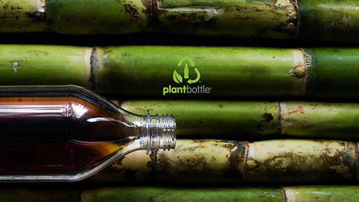
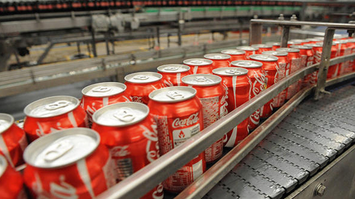

Emballasjen må ivareta forbrukernes behov, og beskytte drikken under levering og lagring. Uten riktig emballasje vil nivået av skadede og bortkastede produkter øke betraktelig, noe som kan ha en betydelig innvirkning på miljøet.
Tradisjonelle PET-flasker er laget av ikke-fornybart fossilt brensel. For å øke mengden fornybart materiale i vår emballasje, har vi skapt PlantBottle™ emballasje, den første fullt resirkulerbare PET-flasken noensinne, laget delvis av planter. Vårt mål er å være uavhengig av bruken av fossilt brensel i produksjonen av vår PET-plast drikkeemballasje.

Gjenvinning hjelper å konservere våre naturlige ressurser. Plastflasker kan for eksempel gjenvinnes til nye plastflasker, og alternative polyesterfibre av PET-plastikk kan anvendes i en rekke andre produkter, fra fleece-gensere til bilmatter.
Gjenvinning reduserer mengden naturlige ressurser som trengs til å lage produkter og pakking. I tillegg reduserer gjenvinning mengden materialer som går til deponi.
Som selskap har Coca-Cola investert direkte i flaske-til-flaske gjenvinningsanlegg rundt om i verden; i Europa ligger disse i Østerrike og Sveits. Disse anleggene behandler millioner av kilo med materiell hvert år, dette bidrar til å produsere materiale for ny PET-emballasje og andre plastgjenstander.
Coca-Cola arbeider for å fremme teknologi som tillater bruk av større mengder resirkulerte materialer, ikke bare i vår emballasje, men også i andre produkter. Vi anbefaler at forbrukerne gjenvinner sine drikkeflasker ved å sette korken på igjen før de panter. Det finnes sluttmarkeder ikke bare for PET-plasten i våre flasker, men også for materialet i korken. 
//Coca-Cola.no{kind=link}
{kind=link}